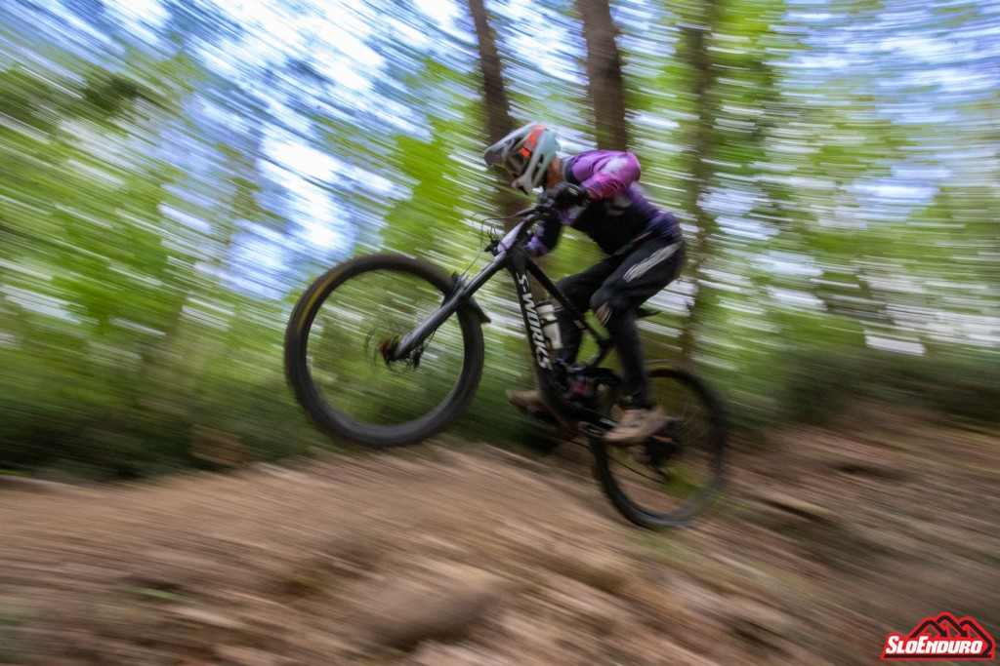
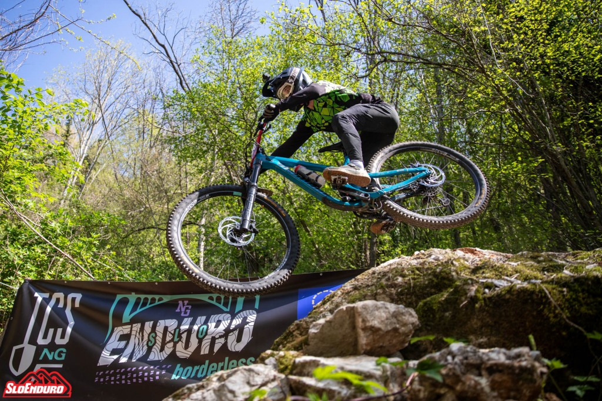
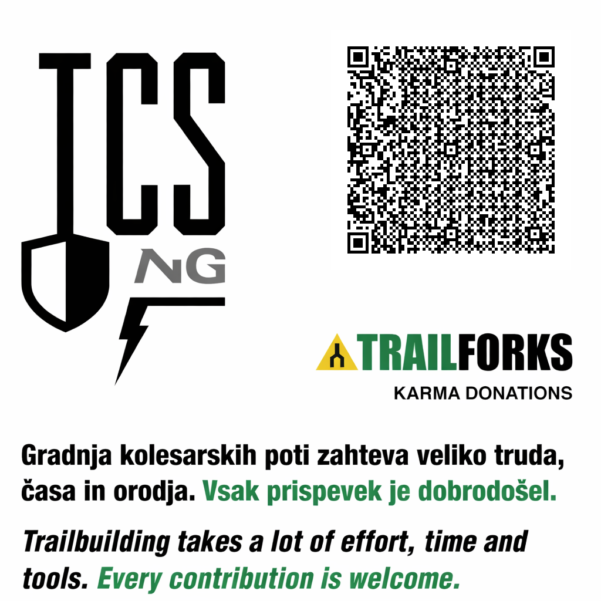

Skupnost, ki ohranja, gradi in razvija poti v sodelovanju z naravo in lokalnim okoljem.





O nas
Zgodba TCS ng se je začela pred več kot dvajsetimi leti, formalno pa
smo se kot društvo povezali leta 2019. Naše poslanstvo je
ohranjanje, gradnja in razvoj kakovostnih poti v sodelovanju z
naravo in lokalnim okoljem.
Delujemo na območju Goriške in širše, kjer čistimo in urejamo
obstoječe poti, ki zaradi naravnih danosti, razgledov in premišljene
zasnove sodijo med najlepše v Sloveniji. Skupno je urejenih
približno 40 kilometrov poti, za tek, pohodništvo in gorsko
kolesarjenje.
Gorsko kolesarjenje razumemo kot dejavnost, ki krepi telo, spodbuja
družabnost in povezuje z naravo. Prepričani smo, da ustrezno
načrtovane in vzdrževane poti omogočajo varno uporabo z minimalnimi
vplivi na okolje ter prispevajo k razvoju rekreacije in turizma v
širšem prostoru. Ključno je sodelovanje s sorodno usmerjenimi
organizacijami ter pristojnimi inštitucijami.
Kontakt
Za vprašanja, sodelovanja ali predloge:
Podpri nas ▾
